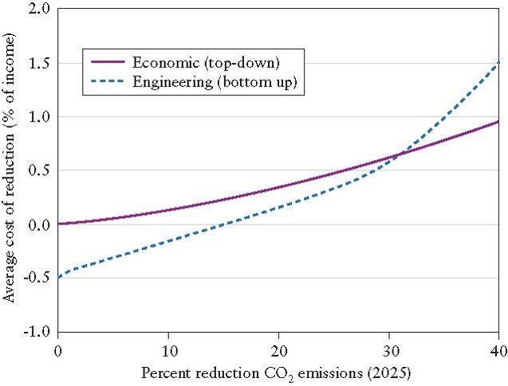
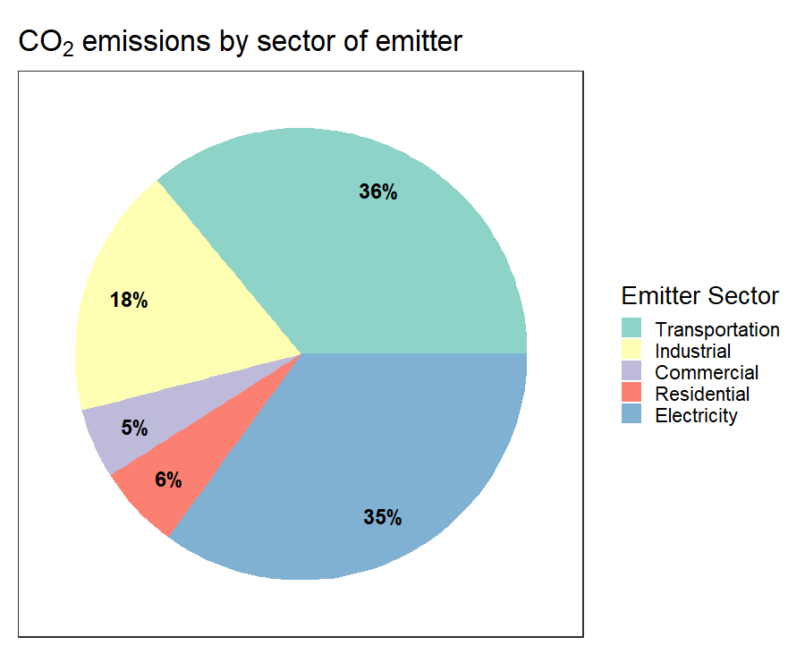
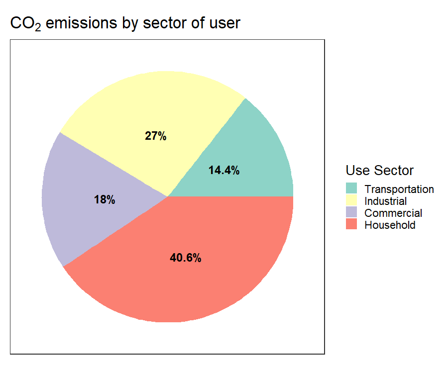
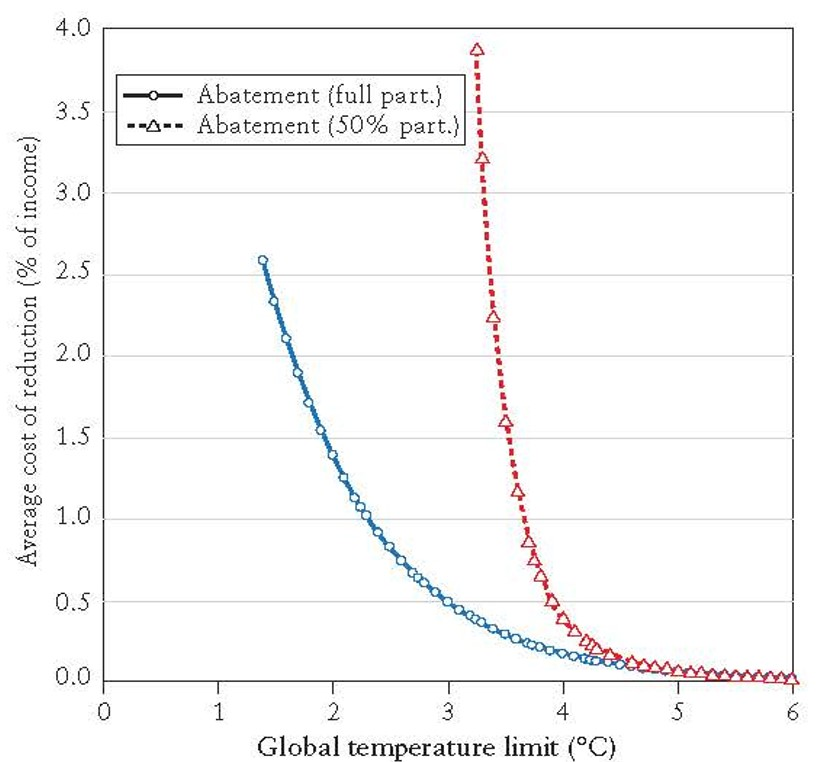

| Climate Fix | Climate Casino |
|---|---|
|
|
| Top Down | Bottom Up |
|---|---|
|
|



Full participation vs. only countries representing 50% of emissions
The favorite policies of most countries today are energy efficiency regulations….
However, such regulations will not touch the area where reductions are most economical—electricity generation from coal. …
[C]areful analyses show that coal is king when it comes to reducing CO2 emissions.
Economists and policymakers do not have the information to micromanage the energy system for 315 million Americans or 7 billion earthlings.
The economy is too complicated and evolves too rapidly.
Rather, … economists emphasize that policy should be designed to provide strong incentives to reduce CO2 emissions and to develop new low-carbon technologies.